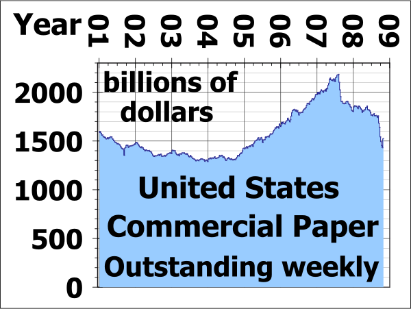
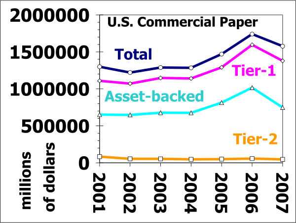
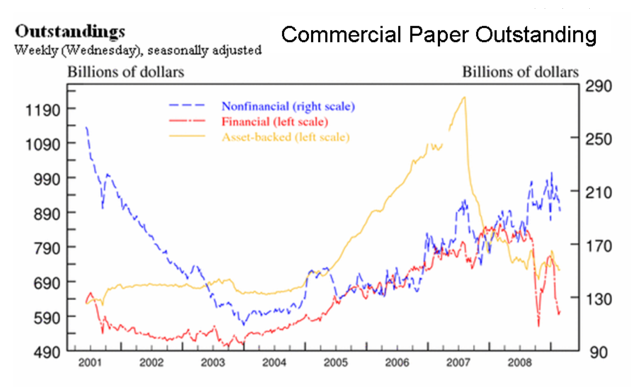

Short-term loans offer individuals and businesses borrowing options to meet financial obligations.
Classify different types of short term loans
Short term loans are borrowed funds used to meet obligations within a few days up to a year. The borrower receives cash from the lender more quickly than with medium- and long-term loans, and must repay it in a shorter time frame.
Examples of short-term loans include:
Overdraft protection is a financial service offered by banking institutions in the United States. An overdraft occurs when money is withdrawn from a bank account and the available balance goes below zero. In this situation, the account is said to be "overdrawn. " If there is a prior agreement with the account provider for an overdraft, and the amount overdrawn is within the authorized overdraft limit, then interest is normally charged at the agreed rate.
A credit card is a payment card issued to users as a method of payment. It allows the cardholder to pay for goods and services based on the holder's promise to pay for them. The issuer of the card creates a revolving account and grants a line of credit to the consumer (or the user) from which the user can borrow money for payment to a merchant or as a cash advance to the user. For smaller businesses, financing via credit card is an easy and viable option.
The main benefit to a business or entrepreneur is convenience. Compared to debit cards and checks, a credit card allows small short-term loans to be quickly made to a customer. The customer then need not calculate a balance remaining before every transaction, provided the total charges do not exceed the maximum credit line for the card.
A payday loan (also called a payday advance) is a small, short-term unsecured loan. These loans are also sometimes referred to as "cash advances," though that term can also refer to cash provided against a credit card or other prearranged line of credit. The basic loan process involves a lender providing a short-term unsecured loan to be repaid at the borrower's next pay day. Typically, some verification of employment or income is involved (via pay stubs and bank statements), but some lenders may omit this.
The money market developed because parties had surplus funds, while others needed cash. The core of the money market consists of inter bank lending (banks borrowing and lending to each other using commercial paper), repurchase agreements, and similar short-term financial instruments. Because money market securities are typically denominated in high values, it is not common for individual investors to wholly own shares of money market securities; instead, investments are carried out by corporations or money market mutual funds. These instruments are often benchmarked to the London Interbank Offered Rate (LIBOR) for the appropriate term and currency.
A refund anticipation loan (RAL) is a short-term consumer loan secured by a taxpayer's expected tax refund designed to offer customers quicker access to funds than waiting for their tax refund. In the United States, taxpayers can apply for a refund anticipation loan through a paid professional tax preparation service.
A bridge loan is a type of short-term loan, typically taken out for a period of two weeks to three years pending the arrangement of larger or longer-term financing. It is interim financing for an individual or business until permanent or next-stage financing can be obtained. Money from the new financing is generally used to "take out" (i.e. to pay back) the bridge loan, as well as other capitalization needs.
Bridge loans are typically more expensive than conventional financing to compensate for the additional risk of the loan. Bridge loans typically have a higher interest rate, points and other costs that are amortized over a shorter period, as well as various fees and other "sweeteners" like equity participation by the lender. The lender also may require cross-collateralization and a lower loan-to-value ratio. On the other hand, they are typically arranged quickly with little documentation.
Bridge loans are used in venture capital and other corporate finance for several purposes:
Credit cards allow users to pay for goods and services based on the promise to pay for them later and the immediate provision of cash by the card provider.
Evaluate the costs and benefits of a credit card
A credit card is a payment card issued to users as a system of payment. It allows the cardholder to pay for goods and services based on the promise to pay for them later and the immediate provision of cash by the card provider. The issuer of the card creates a revolving account and grants a line of credit to the consumer (or the user) from which the user can borrow money for payment to a merchant or as a cash advance to the user. Credit cards allow the consumers a continuing balance of debt, subject to interest being charged. A credit card also differs from a cash card, which can be used like currency by the owner of the card. A credit card is a payment card issued to users as a system of payment.
Credit cards are issued by an issuer like a bank or credit union after an account has been approved by the credit provider, after which cardholders can use it to make purchases at merchants accepting that card.
The main benefit to each customer is convenience. Compared to debit cards and checks, a credit card allows small short-term loans to be quickly made to a customer who need not calculate a balance remaining before every transaction, provided the total charges do not exceed the maximum credit line for the card.
Many credit cards offer rewards and benefits packages like enhanced product warranties at no cost, free loss/damage coverage on new purchases and various insurance protections. Credit cards can also offer reward points which may be redeemed for cash, products or airline tickets.
High interest rates: Low introductory credit card rates are limited to a fixed term, usually between six and 12 months, after which a higher rate is charged. As all credit cards charge fees and interest, some customers become so indebted to their credit card provider that they are driven to bankruptcy. Some credit cards often levy a rate of 20 to 30 percent after a payment is missed. In other cases a fixed charge is levied without change to the interest rate. In some cases universal default may apply - the high default rate is applied to a card in good standing by missing a payment on an unrelated account from the same provider. This can lead to a snowball effect in which the consumer is drowned by unexpectedly high interest rates.
Complex fee structures in the credit card industry limit customers' ability to comparison shop, help ensure that the industry is not price-competitive and help maximize industry profits.
For merchants, a credit card transaction is often more secure than other forms of payment, because the issuing bank commits to pay the merchant the moment the transaction is authorized regardless of whether the consumer defaults on the credit card payment. In most cases, cards are even more secure than cash, because they discourage theft by the merchant's employees and reduce the amount of cash on the premises. Finally, credit cards reduce the back office expense of processing checks/cash and transporting them to the bank.
Merchants are charged several fees for accepting credit cards. The merchant is usually charged a commission of around one to three percent of the value of each transaction paid for by credit card. The merchant may also pay a variable charge, called an interchange rate, for each transaction. In some instances of very low-value transactions, use of credit cards will significantly reduce the profit margin or cause the merchant to lose money on the transaction. Merchants with very low average transaction prices or very high average transaction prices are more averse to accepting credit cards. Merchants may charge users a "credit card supplement," either a fixed amount or a percentage, for payment by credit card. This practice is prohibited by the credit card contracts in the United States, although the contracts allow the merchants to give discounts for cash payment.
Merchants are also required to lease processing terminals, meaning merchants with low sales volumes may have to commit to long lease terms. For some terminals, merchants may need to subscribe to a separate telephone line. Merchants must also satisfy data security compliance standards which are highly technical and complicated. In many cases, there is a delay of several days before funds are deposited into a merchant's bank account. As credit card fee structures are very complicated, smaller merchants are at a disadvantage to analyze and predict fees. Finally, merchants assume the risk of chargebacks by consumers.
Factoring makes it possible for a business to readily convert a substantial portion of its accounts receivable into cash.
Explain the business of factoring and assess the risks of the involved parties
Factoring is a financial transaction whereby a business sells its accounts receivable to a third party (called a "factor") at a discount. Factoring makes it possible for a business to convert a readily substantial portion of its accounts receivable into cash. This provides the funds needed to pay suppliers and improves cash flow by accelerating the receipt of funds. Factoring makes it possible for a business to readily convert a substantial portion of its accounts receivable into cash.
Companies factor accounts when the available cash balance held by the firm is insufficient to meet current obligations and accommodate its other cash needs, such as new orders or contracts. In other industries, however, such as textiles or apparel, for example, financially sound companies factor their accounts simply because this is the historic method of finance. The use of factoring to obtain the cash needed to accommodate a firm's immediate cash needs will allow the firm to maintain a smaller ongoing cash balance. By reducing the size of its cash balances, more money is made available for investment in the firm's growth. Debt factoring is also used as a financial instrument to provide better cash flow control, especially if a company currently has a lot of accounts receivables with different credit terms to manage. A company sells its invoices at a discount to their face value when it calculates that it will be better off using the proceeds to bolster its own growth than it would be by effectively functioning as its "customer's bank. "
There are two principal methods of factoring: recourse and non-recourse. Under recourse factoring, the client is not protected against the risk of bad debts. On the other hand, the factor assumes the entire credit risk under non-recourse factoring (i.e., the full amount of invoice is paid to the client in the event of the debt becoming bad). Other variations include partial non-recourse, where the factor's assumption of credit risk is limited by time, and partial recourse, where the factor and its client (the seller of the accounts) share credit risk. Factors never assume "quality" risk, and even a non-recourse factor can charge back a purchased account which does not collect for reasons other than credit risk assumed by the factor, (e.g., the account debtor disputes the quality or quantity of the goods or services delivered by the factor's client).
In "advance" factoring, the factor provides financing to the seller of the accounts in the form of a cash "advance," often 70-85% of the purchase price of the accounts, with the balance of the purchase price being paid, net of the factor's discount fee (commission) and other charges, upon collection. In "maturity" factoring, the factor makes no advance on the purchased accounts; rather, the purchase price is paid on or about the average maturity date of the accounts being purchased in the batch.
There are three principal parts to "advance" factoring transaction:
The three parties directly involved are the one who sells the receivable, the debtor (the account debtor, or customer of the seller), and the factor. The receivable is essentially an asset associated with the debtor's liability to pay money owed to the seller (usually for work performed or goods sold). The seller then sells one or more of its invoices (the receivables) at a discount to the third party, the specialized financial organization (aka the factor), often, in advance factoring, to obtain cash. The sale of the receivables essentially transfers ownership of the receivables to the factor, indicating the factor obtains all of the rights associated with the receivables. Accordingly, the factor obtains the right to receive the payments made by the debtor for the invoice amount and, in non-recourse factoring, must bear the loss if the account debtor does not pay the invoice amount due solely to his or its financial inability to pay.
The most important risks of a factor are:
Commercial paper is a money-market security issued (sold) by large corporations to get money to meet short term debt obligations.
Analyze the commercial paper market
In the global money market, commercial paper is an unsecured promissory note with a fixed maturity of one to 364 days. Commercial paper is a money-market security issued (sold) by large corporations to get money to meet short term debt obligations (for example, payroll), and is only backed by an issuing bank or a corporation's promise to pay the face amount on the maturity date specified on the note. Since it is not backed by collateral, only firms with excellent credit ratings from a recognized rating agency will be able to sell their commercial paper at a reasonable price. Commercial paper is usually sold at a discount from face value, and carries higher interest repayment rates than bonds. Typically, the longer the maturity on a note, the higher the interest rate the issuing institution must pay. Interest rates fluctuate with market conditions, but are typically lower than banks' rates.
There are two methods of issuing paper. The issuer can market the securities directly to a buy and hold investor such as most money market funds. Alternatively, it can sell the paper to a dealer, who then sells the paper in the market . The dealer market for commercial paper involves large securities firms and subsidiaries of bank holding companies. Most of these firms are also dealers in US Treasury securities. Direct issuers of commercial paper are usually financial companies that have frequent and sizable borrowing needs, and find it more economical to sell paper without the use of an intermediary. In the United States, direct issuers save a dealer fee of approximately five basis points, or 0.05% annualized, which translates to \$50,000 on every \$100 million outstanding. This saving compensates for the cost of maintaining a permanent sales staff to market the paper. Dealer fees tend to be lower outside the United States .
United States Commercial Paper outstanding at end of each week from 3 January 2001 to 29 October 2008. Vertical scale shows debt in billions (thousands of millions) of dollars, horizontal scale shows years. Each blue marker indicates commercial paper outstanding at that date which matures after one week.
United States Commercial Paper outstanding at end of each year 2001 to 2007. Vertical scale shows debt in millions of dollars, horizontal scale shows years. All markers indicate commercial paper outstanding, maturing after December 31. Circles on blue line indicate Total commercial paper; triangles diamonds on pink line indicate SEC rule 2a-7 tier-1 commercial paper; triangles on blue line indicate Asset-backed commercial paper; squares on yellow line indicate SEC rule 2a-7 tier-2 commercial paper.

Commercial paper is a lower cost alternative to a line of credit with a bank. Once a business becomes established and builds a high credit rating, it is often cheaper to draw on a commercial paper than on a bank line of credit. Nevertheless, many companies still maintain bank lines of credit as a backup. Banks often charge fees for the amount of the line of the credit that does not have a balance.
Advantages of commercial paper include lower borrowing costs; term flexibility; and more liquidity options for creditors due to its trade-ability.
Disadvantages of commercial paper include its limited eligibility; reduced credit limits with banks; and reduced reliability due to its strict oversight.
Asset-Backed Commercial Paper (ABCP) is a form of commercial paper that is collateralized by other financial assets. ABCP is typically a short-term instrument that matures between one and 180 days from issuance and is typically issued by a bank or other financial institution. The firm wishing to finance its assets through the issuance of ABCP sells the assets to a Special Purpose Vehicle (SPV) or Structured Investment Vehicle (SIV), created by a financial services company. The SPV/SIV issues the ABCP to raise funds to purchase the assets. This creates a legal separation between the entity issuing and the institution financing its assets.
A secured loan is a loan in which the borrower pledges an asset (e.g. a car or property) as collateral, while an unsecured loan is not secured by an asset.
Differentiate between a secured loan vs. an unsecured loan
Debt refers to an obligation. A loan is a monetary form of debt. A loan constitutes temporarily lending money in exchange for future repayment with specific stipulations such as interest, finance charges, and/or fees. A loan is considered a contract between the lender and the borrower. Loans may either be secured or unsecured.
A secured loan is a loan in which the borrower pledges some asset (e.g., a car or property) as collateral. A mortgage loan is a very common type of debt instrument, used by many individuals to purchase housing. In this arrangement, the money is used to purchase the property. The financial institution, however, is given security — a lien on the title to the house — until the mortgage is paid off in full. If the borrower defaults on the loan, the bank has the legal right to repossess the house and sell it, to recover sums owed to it.
If the sale of the collateral does not raise enough money to pay off the debt, the creditor can often obtain a deficiency judgment against the borrower for the remaining amount. Generally speaking, secured debt may attract lower interest rates than unsecured debt due to the added security for the lender. However, credit history, ability to repay, and expected returns for the lender are also factors affecting rates.
There are two purposes for a loan secured by debt. By extending the loan through secured debt, the creditor is relieved of most of the financial risks involved because it allows the creditor to take the property in the event that the debt is not properly repaid. For the debtor, a secured debt may receive more favorable terms than that available for unsecured debt, or to be extended credit under circumstances when credit under terms of unsecured debt would not be extended at all. The creditor may offer a loan with attractive interest rates and repayment periods for the secured debt.
Unsecured loans are monetary loans that are not secured against the borrower's assets. The interest rates applicable to these different forms may vary depending on the lender and the borrower. These may or may not be regulated by law.
Interest rates on unsecured loans are nearly always higher than for secured loans, because an unsecured lender's options for recourse against the borrower in the event of default are severely limited. An unsecured lender must sue the borrower, obtain a money judgment for breach of contract, and then pursue execution of the judgment against the borrower's unencumbered assets (that is, the ones not already pledged to secured lenders). In insolvency proceedings, secured lenders traditionally have priority over unsecured lenders when a court divides up the borrower's assets. Thus, a higher interest rate reflects the additional risk that in the event of insolvency, the debt may be difficult or impossible to collect.
Unsecured loans are often used by borrowers for small purchases such as computers, home improvements, vacations, or unexpected expenses. An unsecured loan means the lender relies on the borrower's promise to pay it back. Due to the increased risk involved, interest rates for unsecured loans tend to be higher. Typically, the balance of the loan is distributed evenly across a fixed number of payments; penalties may be assessed if the loan is paid off early. Unsecured loans are often more expensive and less flexible than secured loans, but suitable if the lender wants a short-term loan (one to five years).
In the event of the bankruptcy of the borrower, the unsecured creditors will have a general claim on the assets of the borrower after the specific pledged assets have been assigned to the secured creditors, although the unsecured creditors will usually realize a smaller proportion of their claims than the secured creditors.
In some legal systems, unsecured creditors who are also indebted to the insolvent debtor are able (and in some jurisdictions, required) to set-off the debts, which actually puts the unsecured creditor with a matured liability to the debtor in a pre-preferential position.
Asking friends and families to invest is one way that start-ups are funded.
Analyze person to person (P2P) lending
Asking friends and families to invest is another common way that start-ups are funded. Often the potential entrepreneur is young, energetic, and has a good idea for a start-up, but does not have much in the way of personal savings. Friends and family may be older and have some money set aside. While your parents, or other family members should not risk all of their retirement savings on your start-up, they may be willing to risk a small percentage of it to help you out. Asking friends and families to invest is another common way that start-ups are funded.
Sometimes friends your own age are willing to work for little or no wages until your cash flow turns positive. The term "sweat equity" is often used for this type of contribution as the owner will often reward such loyalty with a small percentage ownership of the organization in lieu of cash. A variation on this is barter or trade. This is a method by which you could provide a needed service such as consulting or management advice in return for the resources needed for your start up. This needs to be accounted for in your accounting records also.
Somewhat similar to raising money from family and friends is person-to-person lending. Person-to-person lending (also known as peer-to-peer lending, peer-to-peer investing, and social lending; abbreviated frequently as P2P lending) is a certain breed of financial transaction (primarily lending and borrowing, though other more complicated transactions can be facilitated) which occurs directly between individuals or "peers" without the intermediation of a traditional financial institution. However, person-to-person lending is for the most part a for-profit activity, which distinguishes it from person-to-person charities, person-to-person philanthropy, and crowdfunding.
Lending money and supplies to friends, family, and community members predates formalized financial institutions, but in its modern form, peer-to-peer lending is a by-product of Internet technologies, especially Web 2.0. The development of the market niche was further boosted by the global economic crisis in 2007 to 2010 when person-to-person lending platforms promised to provide credit at the time when banks and other traditional financial institutions were having fiscal difficulties.
Many peer-to-peer lending companies leverage existing communities and pre-existing interpersonal relationships with the idea that borrowers are less likely to default to the members of their own communities. The risk associated with lending is minimized either through mutual (community) support of the borrower or, as occurs in some instances, through forms of social pressure. The peer-to-peer lending firms either act as middlemen between friends and family to assist with calculating repayment terms, or connect anonymous borrowers and lenders based on similarities in their geographic location, educational and professional background, and connectedness within a given social network.
In a particular model of P2P lending known as "family and friend lending", the lender lends money to a borrower based on their pre-existing personal, family, or business relationship. The model forgoes an auction-like process and concentrates on formalizing and servicing a personal loan. Lenders can charge below market rates to assist the borrower and mitigate risk. Loans can be made to pay for homes, personal needs, school, travel, or any other needs.
One of the main advantages of person-to-person lending for borrowers has been better rates than traditional bank rates can offer (often below 10%). The advantages for lenders are higher returns that would be unobtainable from a savings account or other investments.
As person-to-person lending companies and their customer base continue to grow, marketing expenses and administrative costs associated with customer service and arbitration, maintaining product information, and developing quality websites to service customers and stand out among competitors will rise. In addition, compliance to legal regulations becomes more complicated. This causes many of the original benefits from disintermediation to fade away and turns person-to-person companies into new intermediaries, much like the banks that they originally differentiated from. This process of reintroducing intermediaries is known as reintermediation.
Person-to-person lending also attracts borrowers who, because of their past credit status or the lack of thereof, are unqualified for traditional bank loans. The unfortunate situation of these borrowers is well-known for the people issuing the loans and results in very high interest rates that verge on predatory lending and loan sharking.
A commercial bank lends money, accepts time deposits, and provides transactional, savings, and money market accounts.
Sketch out the role of commercial banks in money lending
A commercial or business bank , is a type of financial institution and intermediary that lends money, accepts time deposits, and provides transactional, savings, and money market accounts. A commercial bank (or business bank) is a type of financial institution and intermediary.
Commercial banks engage in the following activities: the processing of payments; accepting money on term deposit; lending money by overdraft, installment loan, or other means; providing documentary and standby letters of credit guarantees, performance bonds, securities underwriting commitments and other forms of off- balance sheet exposures; and the safekeeping of documents and other items in safe deposit boxes.
Commercial banks provide a number of loans. A secured loan is when a borrower pledges some asset (e.g., a car or property) as collateral for it, which then becomes a secured debt owed to the creditor who gives the loan. The debt is thus secured against the collateral. In the event that the borrower defaults, the creditor takes possession of the asset used as collateral and may sell it to regain some or all of the amount originally lent to the borrower.
Commercial banks may also provide unsecured loans, which are monetary loans that are not secured against the borrower's assets (i.e., no collateral is involved). Some examples of unsecured loans include credit cards and credit lines.
An overdraft is an example of an unsecured loan. An overdraft occurs when money is withdrawn from a bank account and the available balance goes below zero. In this situation, the account is said to be "overdrawn". If there is a prior agreement with the account provider for an overdraft, and the amount overdrawn is within the authorized overdraft limit, then interest is normally charged at the agreed rate. If the positive balance exceeds the agreed terms, then additional fees may be charged and higher interest rates may apply.
Accessing funds through a commercial bank is very typical, and a common way of accessing funds when in need, particularly in the case of small or entrepreneurial businesses.
Trade credit is the largest use of capital for a majority of B2B sellers; Accounts Payable is money owed by a firm to its suppliers.
Explain the process of using and recording accounts payable
Trade credit is the largest use of capital for a majority of business to business (B2B) sellers in the United States and is a critical source of capital for a majority of all businesses. For example, Wal-Mart, the largest retailer in the world, has used trade credit as a larger source of capital than bank borrowings. Trade credit for Wal-Mart is eight times the amount of capital invested by shareholders.
For many borrowers in the developing world, trade credit serves as a valuable source of alternative data for personal and small business loans.
There are many forms of trade credit in common use; often industry-specific. They all benefit from their collaboration to make efficient use of capital to accomplish various business objectives.
Accounts Payable (A/P and also known as creditors) is money owed by a business to its suppliers. An accounts payable is recorded in the A/P sub-ledger at the time an invoice is vouchered for payment. Payables are often categorized as Trade Payables, payables for the purchase of physical goods that are recorded in Inventory, and Expense Payables, payables for the purchase of goods or services that are expensed. Common examples of Expense Payables are advertising, travel, entertainment, office supplies, and utilities. A/P is a form of credit that suppliers offer to their customers by allowing them to pay for a product or service after it has already been received. Accounts Payable (also known as Creditors) is money owed by a business to its suppliers.
In households, these payables are ordinarily bills such as utility, rent, etc. Households usually track and pay on a monthly basis manually by using checks, credit cards, or online banking. In a business, there is usually a much broader range of suppliers to pay, and accountants or bookkeepers usually use accounting software to track the flow of money into this liability account when they receive invoices and out of it when they make payments. Increasingly, large firms often use specialized automation solutions (commonly called ePayables) to automate the paper and manual elements of processing an organization's invoices.
Commonly, a supplier will ship a product, issue an invoice, and collect payment later, which describes a cash conversion cycle, a period of time during which the supplier has already paid for raw materials but hasn't been paid in return by the final customer. When the invoice is received by the purchaser, it is matched to the packing slip and purchase order, and if all is in order, the invoice is paid. This is referred to as the three-way match. The three-way match can slow down the payment process, so the method may be modified. For example, three-way matching may be limited solely to large-value invoices, or the matching is automatically approved if the received quantity is within a certain percentage of the amount authorized in the purchase order.
{kind=link}
{kind=link}
{kind=link}